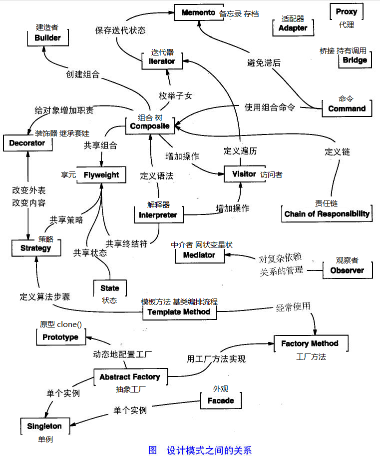

设计模式简介
设计模式（Design pattern）代表了最佳的实践，通常被有经验的面向对象的软件开发人员所采用。设计模式是软件开发人员在软件开发过程中面临的一般问题的解决方案。这些解决方案是众多软件开发人员经过相当长的一段时间的试验和错误总结出来的。
设计模式是一套被反复使用的、多数人知晓的、经过分类编目的、代码设计经验的总结。使用设计模式是为了重用代码、让代码更容易被他人理解、保证代码可靠性。 毫无疑问，设计模式于己于他人于系统都是多赢的，设计模式使代码编制真正工程化，设计模式是软件工程的基石，如同大厦的一块块砖石一样。项目中合理地运用设计模式可以完美地解决很多问题，每种模式在现实中都有相应的原理来与之对应，每种模式都描述了一个在我们周围不断重复发生的问题，以及该问题的核心解决方案，这也是设计模式能被广泛应用的原因。
什么是 GOF（全拼 Gang of Four）？
在 1994 年，由 Erich Gamma、Richard Helm、Ralph Johnson 和 John Vlissides 四人合著出版了一本名为Design Patterns - Elements of Reusable Object-Oriented Software（中文译名：设计模式 - 可复用的面向对象软件元素）的书，该书首次提到了软件开发中设计模式的概念。
四位作者合称GOF（全拼 Gang of Four）。他们所提出的设计模式主要是基于以下的面向对象设计原则。
- 对接口编程而不是对实现编程。
- 优先使用对象组合而不是继承。
设计模式的使用
设计模式在软件开发中的两个主要用途。
开发人员的共同平台
设计模式提供了一个标准的术语系统，且具体到特定的情景。例如，单例设计模式意味着使用单个对象，这样所有熟悉单例设计模式的开发人员都能使用单个对象，并且可以通过这种方式告诉对方，程序使用的是单例模式。
最佳的实践
设计模式已经经历了很长一段时间的发展，它们提供了软件开发过程中面临的一般问题的最佳解决方案。学习这些模式有助于经验不足的开发人员通过一种简单快捷的方式来学习软件设计。
设计模式的类型
根据设计模式的参考书Design Patterns - Elements of Reusable Object-Oriented Software（中文译名：设计模式 - 可复用的面向对象软件元素）中所提到的，总共有 23 种设计模式。这些模式可以分为三大类：创建型模式（Creational Patterns）、结构型模式（Structural Patterns）、行为型模式（Behavioral Patterns）。当然，我们还会讨论另一类设计模式：J2EE 设计模式。
| 序号 | 模式 & 描述 | 包括 |
|---|---|---|
| 1 | 创建型模式 这些设计模式提供了一种在创建对象的同时隐藏创建逻辑的方式，而不是使用 new 运算符直接实例化对象。这使得程序在判断针对某个给定实例需要创建哪些对象时更加灵活。 |
|
| 2 | 结构型模式 这些模式关注对象之间的组合和关系，旨在解决如何构建灵活且可复用的类和对象结构。 |
|
| 3 | 行为型模式 这些模式关注对象之间的通信和交互，旨在解决对象之间的责任分配和算法的封装。 |
|
| 4 | J2EE 模式 这些设计模式特别关注表示层。这些模式是由 Sun Java Center 鉴定的。 |
|
下面用一个图片来整体描述一下设计模式之间的关系：

设计模式的优点
- 提供了一种共享的设计词汇和概念，使开发人员能够更好地沟通和理解彼此的设计意图。
- 提供了经过验证的解决方案，可以提高软件的可维护性、可复用性和灵活性。
- 促进了代码的重用，避免了重复的设计和实现。
- 通过遵循设计模式，可以减少系统中的错误和问题，提高代码质量。
设计模式的六大原则
1、开闭原则（Open Close Principle）
开闭原则的意思是：对扩展开放，对修改关闭。在程序需要进行拓展的时候，不能去修改原有的代码，实现一个热插拔的效果。简言之，是为了使程序的扩展性好，易于维护和升级。想要达到这样的效果，我们需要使用接口和抽象类，后面的具体设计中我们会提到这点。
2、里氏代换原则（Liskov Substitution Principle）
里氏代换原则是面向对象设计的基本原则之一。 里氏代换原则中说，任何基类可以出现的地方，子类一定可以出现。LSP 是继承复用的基石，只有当派生类可以替换掉基类，且软件单位的功能不受到影响时，基类才能真正被复用，而派生类也能够在基类的基础上增加新的行为。里氏代换原则是对开闭原则的补充。实现开闭原则的关键步骤就是抽象化，而基类与子类的继承关系就是抽象化的具体实现，所以里氏代换原则是对实现抽象化的具体步骤的规范。
3、依赖倒转原则（Dependence Inversion Principle）
这个原则是开闭原则的基础，具体内容：针对接口编程，依赖于抽象而不依赖于具体。
4、接口隔离原则（Interface Segregation Principle）
这个原则的意思是：使用多个隔离的接口，比使用单个接口要好。它还有另外一个意思是：降低类之间的耦合度。由此可见，其实设计模式就是从大型软件架构出发、便于升级和维护的软件设计思想，它强调降低依赖，降低耦合。
5、迪米特法则，又称最少知道原则（Demeter Principle）
最少知道原则是指：一个实体应当尽量少地与其他实体之间发生相互作用，使得系统功能模块相对独立。
6、合成复用原则（Composite Reuse Principle）
合成复用原则是指：尽量使用合成/聚合的方式，而不是使用继承。
其他扩展
漂流石
296***87@qq.com
开闭原则：实现热插拔，提高扩展性。
里氏代换原则：实现抽象的规范，实现子父类互相替换；
依赖倒转原则：针对接口编程，实现开闭原则的基础；
接口隔离原则：降低耦合度，接口单独设计，互相隔离；
迪米特法则，又称不知道原则：功能模块尽量独立；
合成复用原则：尽量使用聚合，组合，而不是继承；
漂流石
296***87@qq.com
Java就是要搞对象啊
107***9244@qq.com
Java就是要搞对象啊
107***9244@qq.com
tech_monkey
tec***onkey@hotmail.com
在面向对象设计模式中存在的是五大原则和一个法则。
五大原则:
迪米特法则是管理中涉及的一个术语，被引用到面向对象术语体系中，又称知识最少原则。Least Knowledge Principle正儿八经的翻译是就是知识最少原则，不知道哪个英文水平不济的把knowledge翻译成了知道，汗语中知道是动词没有名词的意思，而knowledge译成见闻也比相对好一点。虽然现在都知道“知道”的意思。另外，在一些台系的书中迪米特法则也被翻译成“德默特尔法则”，当你看到这个时不要奇怪——音译本就会出现多个译法的。
其实在清华出版社中软件设计师书中，迪米特虽然被称为法则，但其与其他五大原则是同样的重要的，所以有些人会混称为面向对象六大原则，事实上在软件设计师考试中经常使用的面向对象五大原则。按清华出版社软件设计师体系来说，面向对象五大原则和一个法则（迪法特法则）。其他时候程序员也称为六大原则。
在MSDN类库设计原则中提到“尽量少使用继承，而使用组合与聚合“，但其并没有说明原因。微软的惯例就是如此，只告诉你应该如何，不应该如何，尽量如何或尽量不如何，从来不会告诉你原则。在面向对象设计中（清华出版社软件设计师一书中）讲到五大原则与法则共同的目标就是高内聚低耦合的代码。
其中高内聚指的是类内成员之间的关系，而低耦合则是类关系。要求就是类内各成员的关系尽量高，并按照一定的方式对内聚性进行排序。而讲到耦合关系，按照一定的方式也进行了排序；也就是内聚度与耦合度对这种关系进行了一定程度上量化。所以此处提到了继承——继承是耦合度最高的一种关系。所以提示了一句话是尽量使用组合或聚合的方式来代替继承，或者使用最简单的继承树关系，当然也提示了继承应该继承于抽象类，避免继承实现类。这个是对高内聚低耦合的一个补充说明，而且没有绝对的定义。所以并不是几大原则之中的事。而且有前提前条件，只是避免继承普通类！所以合成复用原则完全是某个人背完了原则忘记了而瞎编出来的（只是会背不会用或不理解，当然容易忘记了）！
当然，单一职责原则其实就是为了提高内聚性一个说明，它的目的就保证了内聚性，只有一个引起变化的原因，说明类内成员之间的关系较高，内聚性不强的就不要写到一个类中。这就是单一职责的真正用意。事实上很多程序员爱写大类超多成员或爱用静态成员，都是对内聚性的一种破坏——所以这些人很难想起来还有一个单一职责的原则！慢慢的这个原则就是被忘记了！
tech_monkey
tec***onkey@hotmail.com
krion
a92***5081@qq.com
参考地址
接口隔离原则(ISP)
设计应用程序的时候，如果一个模块包含多个子模块，那么我们应该小心对模块做出抽象。设想该模块由一个类实现，我们可以把系统抽象成一个接口。但是要添加一个新的模块扩展程序时，如果要添加的模块只包含原系统中的一些子模块，那么系统就会强迫我们实现接口中的所有方法，并且清寒要编写一些哑方法。这样的接口被称为肚胖接口或者被污染的接口，使用这样的接口将会给系统引入一些不当的行为，这些不当的行为可能导致不正确的结果，也可能导入资源浪费。
1.接口隔离
接口隔离原则（Interface Segregation Principle, ISP）表明客户端不应该被强迫实现一些他们不会使用的接口，应该把胖接口中的方法分组，然后用多个接口替代它，每个接口服务于一个子模块。简单地说，就是使用多个专门的接口比使用单个接口要好很多。
ISP 的主要观点如下：
1）一个类对另外一个类的依赖性应当是建立在最小的接口上的。
ISP 可以达到不强迫客户（接口的使用方法）依赖于他们不用的方法，接口的实现类应该只呈现为单一职责的角色（遵循 SRP 原则） ISP 还可以降低客户之间的相互影响---当某个客户要求提供新的职责（需要变化）而迫使接口发生改变时，影响到其他客户程序的可能性最小。
2）客户端程序不应该依赖它不需要的接口方法（功能）。
客户端程序就应该依赖于它不需要的接口方法（功能），那依赖于什么？依赖它所需要的接口。客户端需要什么接口就是提供什么接口，把不需要的接口剔除，这就要求对接口进行细化，保证其纯洁性。
比如在继承时，由于子类将继承父类中的所有可用方法；而父类中的某些方法，在子类中可能并不需要。例如，普通员工和经理都继承自雇员这个接口，员工需要每天写工作日志，而经理不需要。因此不能用工作日志来卡经理，也就是经理不应该依赖于提交工作日志这个方法。
可以看出，ISP和SRP在概念上是有一定交叉的。事实上，很多设计模式在概念上都有交叉，甚至你很难判断一段代码属于哪一种设计模式。
ISP强调的是接口对客户端的承诺越少越好，并且要做到专一。当某个客户程序的要求发生变化，而迫使接口发生改变时，影响到其他客户程序的可能性小。这实际上就是接口污染的问题。
2.对接口的污染
过于臃肿的接口设计是对接口的污染。所谓的接口污染就是为接口添加不必要的职责，如果开发人员在接口中增加一个新功能的目的只是减少接口实现类的数目，则此设计将导致接口被不断地“污染”并“变胖”。
“接口隔离”其实就是定制化服务设计的原则。使用接口的多重继承实现对不同的接口的组合，从而对外提供组合功能---达到“按需提供服务”。 接口即要拆，但也不能拆得太细，这就得有个标准，这就是高内聚。接口应该具备一些基本的功能，能独一完成一个基本的任务。
在实际应用中，会遇到如下问题：比如，我需要一个能适配多种类型数据库的 DAO 实现，那么首先应实现一个数据库操作的接口，其中规定一些数据库操作的基本方法，比如连接数据库、增删改查、关闭数据库等。这是一个最少功能的接口。对于一些 MySQL 中特有的而其他数据库里并不存在的或性质不同的方法，如 PHP 里可能用到的 MySQL 的 pconnect 方法，其他数据库里并不存在和这个方法相同的概念，这个方法也就不应该出现在这个基本的接口里，那这个基本的接口应该有哪些基本的方法呢？PDO已经告诉你了。
PDO 是一个抽象的数据库接口层，它告诉我们一个基本的数据库操作接口应该实现哪些基本的方法。接口是一个高层次的抽象，所以接口里的方法都应该是通用的、基本的、不易变化的。
还有一个问题，那些特有的方法应该怎么实现？根据ISP原则，这些方法可以在别一个接口中存在，让这个“异类”同时实现这两个接口。
对于接口的污染，可以考虑这两条处理方式：
委托模式中，有两个对象参与处理同一个请求，接受请求的对象将请求委托给另一个对象来处理，如策略模式、代理模式等中都应用到了委托的概念。
krion
a92***5081@qq.com
参考地址
krion
a92***5081@qq.com
参考地址
设计模式类型事例
1.创建型模式
FACTORY？加工工厂：给它“M4A1”，它给你产把警枪，给它“AK47”，你就端了把匪枪。CS里买枪的程序一定是用这个模式的。
BUILDER？生产流水线：以前是手工业作坊式的人工单个单个的生产零件然后一步一步组装做，好比有了工业革命，现在都由生产流水线代替了。如要造丰田汽车，先制定汽车的构造如由车胎、方向盘、发动机组成。再以此构造标准生产丰田汽车的车胎、方向盘、发动机。然后进行组装。最后得到丰田汽车；
PROTOTYPE？印刷术的发明：以前只能临贴抄写费时费力，效率极低，有了印刷术，突突的；
SINGLETON？确保唯一：不是靠new的，是靠instance的，而且要instance地全世界就这么一个实例(这可怜的类，也配叫“类”)。 看SingleTon类代码。
2.结构型模式
ADAPTER？翻译官：胡哥只会汉语，布什只会美语，翻译官既通汉又通美，Adapter了 ；
DECORATOR？装饰：名字可以标识一个人，为了表示对一个人的尊重，一般会称其为“尊敬的”，有了装饰，好看多了；
BRIDGE？白马非马：马之颜色有黑白，马之性别有公母。我们说"这是马"太抽象，说"这是黑色的公马"又太死板，只有将颜色与性别和马动态组合，"这是（黑色的或白色的）（公或母）马"才显得灵活而飘逸，如此bridge模式精髓得矣。
COMPOSITE？大家族：子又生孙，孙又生子，子子孙孙，无穷尽也，将众多纷杂的人口组织成一个按辈分排列的大家族即是此模式的实现；
FACADE？求同存异：高中毕业需读初中和高中，博士也需读初中和高中，因此国家将初中和高中普及成九年制义务教育；
FLYWEIGHT？一劳永逸：认识三千汉字，可以应付日常读书与写字，可见头脑中存在这个汉字库的重要；
PROXY？垂帘听政：犹如清朝康熙年间的四大府臣，很多权利不在皇帝手里，必须通过辅佐大臣去办；
3.行为模式
CHAIN OF RESPONSIBLEITY？租房：以前为了找房到处打听，效率低且找不到好的房源。现在有了房屋中介，于是向房屋中介提出租房请求，中介提供一个合适的房源，满意则不再请求，不满意继续看房，直到满意为止；
COMMAND？借刀杀人：以前是想杀谁就杀，但一段时间后领悟到，长此以往必将结仇太多，于是假手他人，挑拨他人之间的关系从而达到自己的目的；
INTERPRETER？文言文注释：一段文言文，将它翻译成白话文；
ITERATOR？赶尽杀绝：一个一个的搜索，绝不放掉一个；
MEDIATOR？三角债：本来千头万绪的债务关系，忽出来一中介，包揽其一切，于是三角关系变成了独立的三方找第四方中介的关系；
MEMENTO？有福同享：我有多少，你就有多少；
OBSERVER？看守者：一旦被看守者有什么异常情况，定会及时做出反应；
STATE？进出自由：如一扇门，能进能出，如果有很多人随时进进出出必定显得杂乱而安全，如今设一保安限制其进出，如此各人进出才显得规范；
STRATEGY？久病成良医：如人生病可以有各种症状，但经过长期摸索，就可以总结出感冒、肺病、肝炎等几种；
TEMPLATE METHOD？理论不一定要实践：教练的学生会游泳就行了，至于教练会不会则无关紧要；
VISITOR？依法治罪：因张三杀人要被处死，李四偷窃要被罚款。由此势必制定处罚制度，故制定法律写明杀人、放火、偷窃等罪要受什么处罚，经通过后须变动要小。今后有人犯罪不管是谁，按共条例处罚即是，这就是访问者模式诞生的全过程。
krion
a92***5081@qq.com
参考地址
蘑菇力
168***7348@qq.com
七大原则记忆口诀：开口里合最单依
开：开闭原则
口：接口隔离原则
里：里氏替换原则
合：合成复用原则
最：最少知道原则（迪米特原则）
单：单一职责原则
依：依赖倒置原则
蘑菇力
168***7348@qq.com